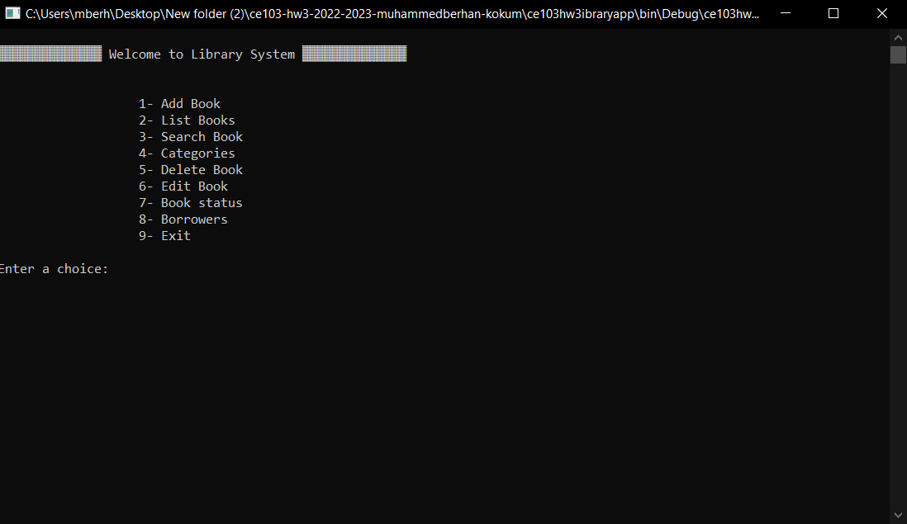
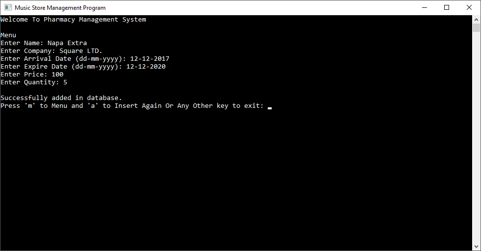

Bu proje, bir kütüphane yönetim sistemi geliştirmek için oluşturulmuş, C# dilinde yazılmış bir konsol tabanlı uygulamadır.
Sistem, kütüphane çalışanlarının ve yöneticilerinin kitapları, üyeleri ve ödünç alma süreçlerini kolaylıkla yönetmesine yardımcı olmak amacıyla tasarlanmıştır.
Hızlı, kullanıcı dostu ve özelleştirilebilir yapısıyla hem küçük hem de büyük ölçekli kütüphaneler için etkili bir çözümdür.

Deprem sonrası acil durum müdahalelerinde hızlı ve etkili bir şekilde enkaz alanlarını ve güvenli yolları tespit etmek kritik öneme sahiptir.
Bu ihtiyacı karşılamak için geliştirilen Deprem Dronu, yapay zeka tabanlı görüntü işleme teknolojisiyle donatılmış, otonom bir haritalama aracıdır.
Deprem Dronu, enkaz alanlarında hızlı ve etkili bir şekilde haritalama yaparak, enkaz altında kalan insanları tespit etmeyi ve kurtarma ekiplerine yol göstermeyi hedefler.

Bu proje, java programlama dili kullanılarak geliştirilmiş bir konsol uygulamasıdır.
bir eczanenin temel iş süreçlerini dijital olarak yönetmek için geliştirilen bir Java konsol uygulamasıdır.
Bu uygulama, eczane çalışanlarının ve yöneticilerinin ilaç stoklarını, müşteri taleplerini, satışları ve tedarik işlemlerini kolayca takip etmelerini sağlar.
Konsol tabanlı arayüzü sayesinde hızlı, kullanıcı dostu ve düşük kaynak tüketimli bir çözüm sunar.